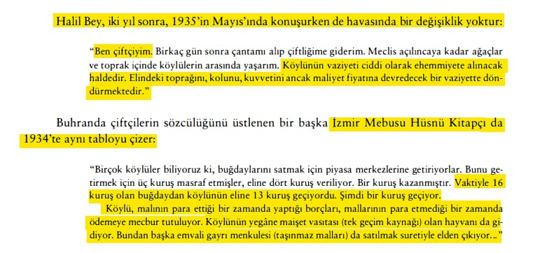
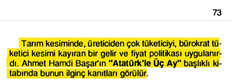
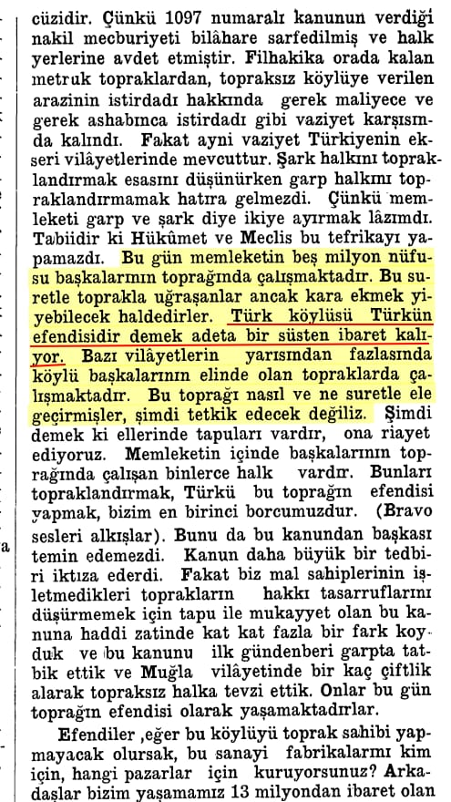
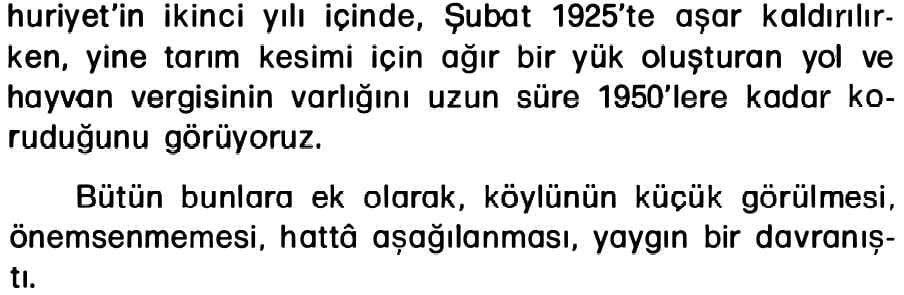
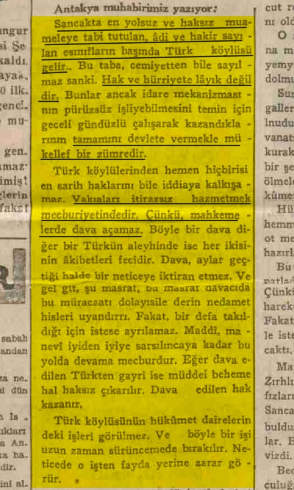
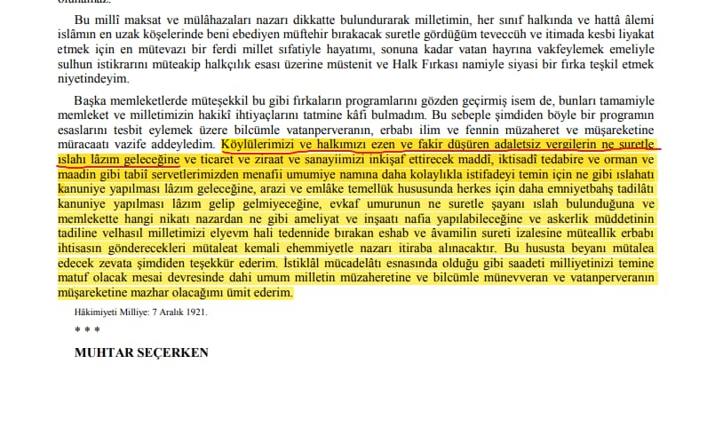
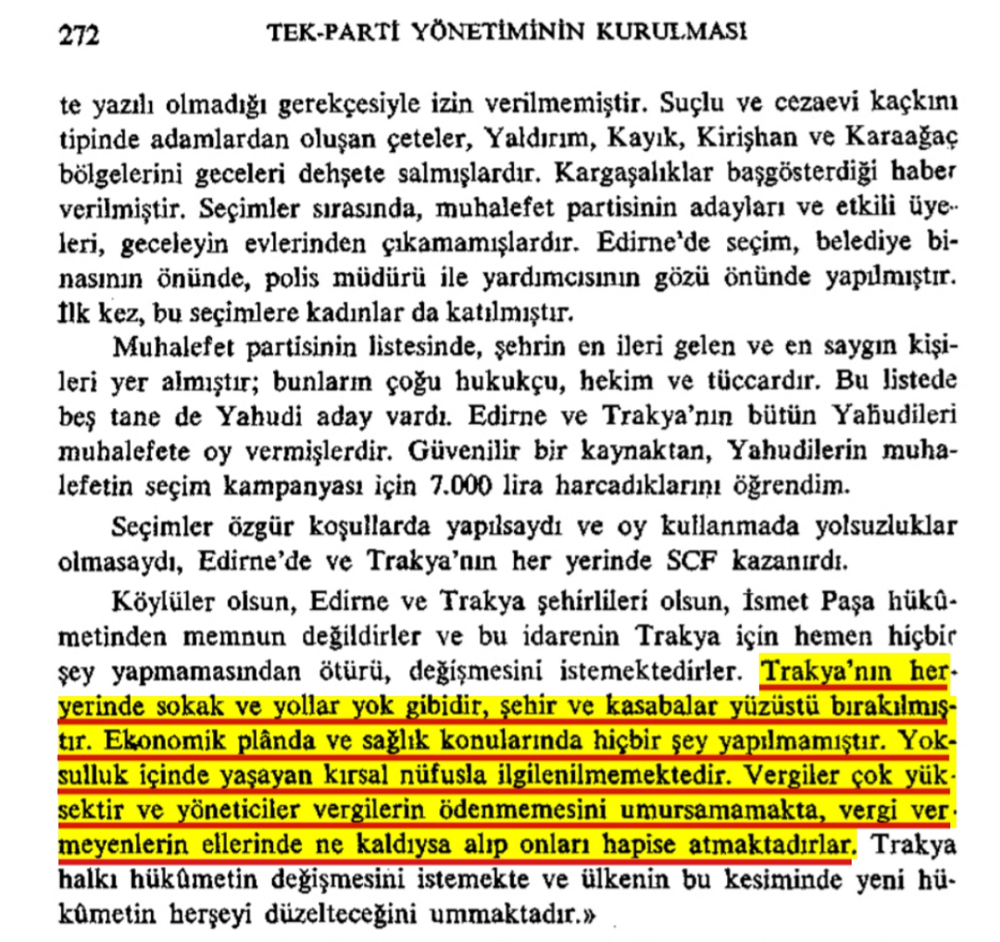
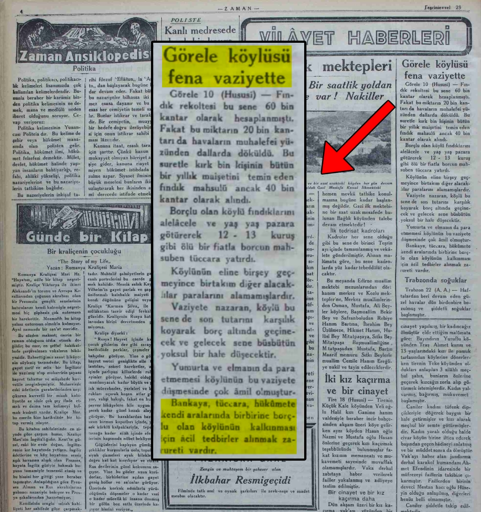

📌 1935 yılında TBMM milletvekilinden Atatürk dönemi Türk köylüsünün berbat durumunu ve yaşadığı sıkıntıları anlattığı konuşma:📕 Bilsay Kuruç, Mustafa Kemal Döneminde Ekonomi, ikinci kısım: Türkiye s.462/

- 📌 Sol Kemalist Bülent Ecevit'in itiraf niteliği taşıyan sözleri;📕 Bülent Ecevit, Mithat Paşa ve Türk Ekonomisinin Tarihsel Süreci, s.73

📌 *İçişleri Bakanı, Kemalist Şükrü Kaya'nın 1934 yılında yaptığı itiraf:*
*''Türk köylüsü Türkün efendisidir demek adeta bir süsten ibaret kalıyor.''*📚 Türkiye Büyük Millet Meclisi Zabıt Ceridesi, Devre: 5, Cilt 6, 1934, s. 58

📌 Aşar kaldırıldıktan sonra gelen vergilerin köylüye ağır yük oluşturması ve köylünün hor görülmesi:📚 Prof.Yüksel Ülken, Atatürk ve İktisat, s.13

📌 *Haber Gazetesinin Manşetinden Türk Köylüsüne yapılan haksızlıklar...*📚 Haber Gazetesi, 1 Kasım 1936 s.2

📌 *Köylülerimizi ve halkımızı ezen ve fakir düşüren adaletsiz vergiler...* 📚 Atatürk'ün Söylev Ve Demeçleri, s.268

📌 *Yabancı bir gözlemcinin anlattıkları, Trakya halkına yapılan haksızlıklar.*📚 Mete Tunçay, Türkiye Cumhuriyeti'nde Tek Parti Yönetiminin Kurulması, s.272

📌 *Görele köylüsü fena vaziyette.*📚 Zaman Gazetesi, 23 Ekim 1934, s.4